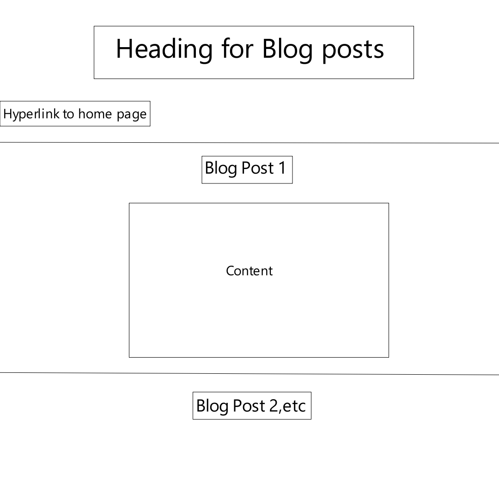
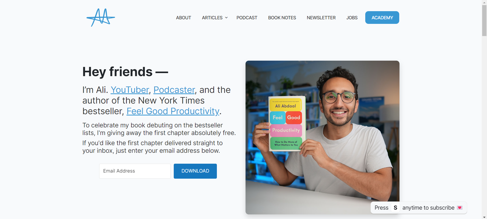
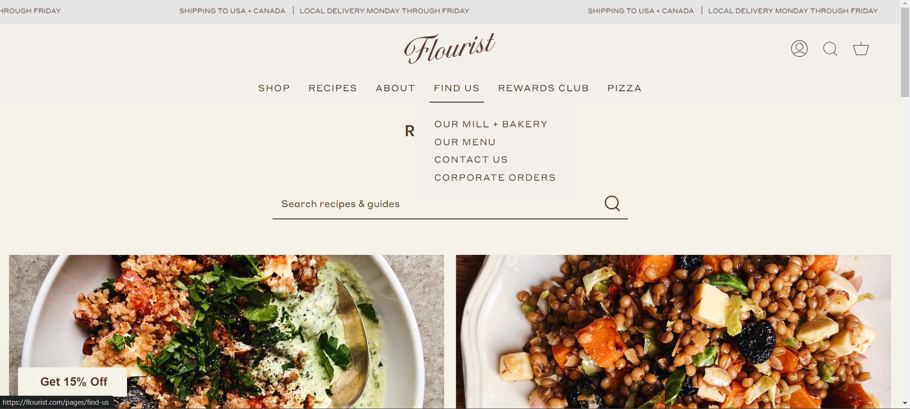

While my website starts taking shape, the initial folder structure will comprise of the index page, which will have a small introductory paragraph, detailing what the website content will be. The index page will also contain hyperlinks to the blog document and an about document. The blog document will contain the content for the weekly blogs. I will probably divide each blog post into their own document, to make it more user friendly and organised. The about document will contain brief description of myself. The folder will also contain an image folder to contain any images I use within my document. If I have an idea to use other forms of media such as gifs or videos, they will also be contained in a separate folder so that it is organised and easier to access. A design folder will be created to display wireframe ideas and IxD documentation. Other than our website assignments, we will also have essays to complete, these essays will be displayed in its own document. Finally, the portfolio section will showcase the games I previously created.
URL Scheme
URL means Uniform Resource Locator and is the given address for a resource on the web. Each URL has is a unique resource. The first part of the URL is known as the protocol and it indicates to the browser which protocol must be used to transfer data around the computer network. Google now displays an icon to view website information for the user to know if it secure or not and allows the user to access the valid certificate. It also allowa users to view settings on the site's cookies. Semantic URLs are designed to be human-readable, rather being in the broswer's space it is placed in the users. This website will be hosted on Github Pages, which takes the files from our repo, publishes it and it is hosted on the github.io domain. As it is hosted on Github, the security is automatically handled and the site with have an https protocol and :443 port, followed by the name of the organisation and domain(wits-digital-arts-interactive-media.github.io) and my own repo and the path file (WSOA3028A_2583750/index.html). All together the URL will appear as https://wits-digital-arts-interactive-media.github.io/WSOA3028A_2583750/index.html
Wireframes
My aim with the initial wireframes is to create a website with a simple and basic outline that allows me to understand how html elements can be used. As my knowledge of html and other languages develop, so to will the wireframes and the conceptual ideas for the website. For now, the homepage will appear similar to the wireframe below. The About page and Essay page will have the same layout, as both documents will be primarily text based. The Portfolio and Design Pages will have layouts that compliment the visual elements it will consist of.
HomePage Wireframe.

Wireframe for Blog PageAbout & Essay Page Wireframe.Portfolio and Design Page Wireframe
Inspo Websites

Image displaying ali abdaal website 
Image displaying the flourist website Image displaying haute stock website
The above websites are simple yet effectively communicate the intention of the host to the users. Navigation on the websites are made particularly accessible to the user. There is less conflict between their input and the desired output. I chose these as inspiration, as I feel my current design philosphy is based on user convenience- making the website easy for the user to feel in control of what they are doing. I've seen many websites, that stray too far away from conventions and while it makes for a great spectacle and artwork, the user is confused on how to navigate and find what they need.
Reflections on module
The reading for this week regarding hypertext was very dense for me. It took a few readings and research for me to understand and so I still feel I don't fully have a grasp on it. One of the standout points, was the discussion on the potential for hyperlinks to change narrative structures. We see today how narratives on the internet are conveyed, especially with a new platform such as TikTok, which has created entirely new sub genre's of content on the internet. Moulthrop spoke about the idea of "retrieving what was previously obsolesced", which refers to the revival of preservation of artefacts. We see on the internet how sites such as Google or Youtube allows us to access and preserve content or archives from years ago.
Coincedentally, I found this blog post which helped with my understanding of some of the content of the reading
Interaction is the basis of the world wide web. Billions of interactions occur on a day-to-day basis on the web, between other users and between users and applications.Interaction is the response of something from a user’s input. How the user interprets the information provided to them and how they choose to interact with it. In web development terms, the user engages with the application with the intention of finding something and in turn the application must provide the necessary information to the user in a concise manner. A weakness that is found in certain websites, is that it caters to the developers needs and not the users. The developer forces the user to adapt to the website's interface, when the user should have no struggle in figuring out the website and the website should cater to the user's needs instead.